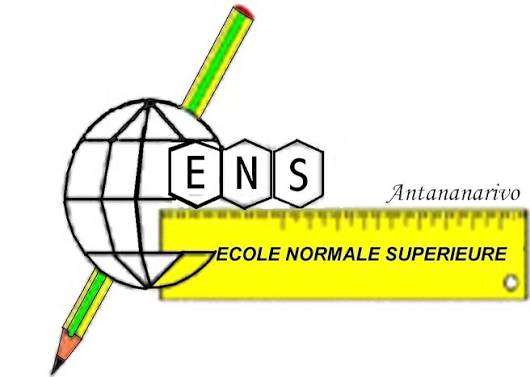

Ingénieur géomaticien (Bac+5) spécialisé dans la conception d'outils cartographiques et la structuration de bases de données spatiales. Deux ans d'apprentissage sur des projets opérationnels de gestion territoriale et de suivi environnemental, de l'administration de la donnée à la production cartographique et au déploiement d'outils de saisie terrain. Maîtrise de la suite ESRI (ArcGIS Pro, ArcGIS Online, Experience Builder, Field Maps) comme des solutions open-source (PostGIS, Leaflet, Django). Sensible aux enjeux de biodiversité et de nature en ville, avec un goût prononcé pour l'accompagnement pédagogique et la montée en compétence des équipes.

- Conception et déploiement d'un portail de suivi de colonies d'espèces protégées (laridés) : structuration des données de nidification, zones de compensation et de quiétude, partage avec partenaires internes et externes. ArcGIS Pro, ArcGIS Online, Experience Builder
- Développement d'un outil de suivi des chantiers et interventions sur le domaine portuaire : modélisation de la base spatiale, formulaires de saisie (CRUD), tableau de bord et gestion des droits d'accès. PostgreSQL/PostGIS, Django, Leaflet

- Appui aux études territoriales sur la multiculturalité et l'interculturalité : analyse de données, traitement statistique et cartographique, contribution à la conduite de projet.

- Déploiement d'un dispositif de saisie mobile terrain (ArcGIS Field Maps) pour l'inventaire géolocalisé des aires de jeux : paramétrage des formulaires, levés GPS, intégration et contrôle qualité. ArcGIS Field Maps, ArcGIS Pro/Online
